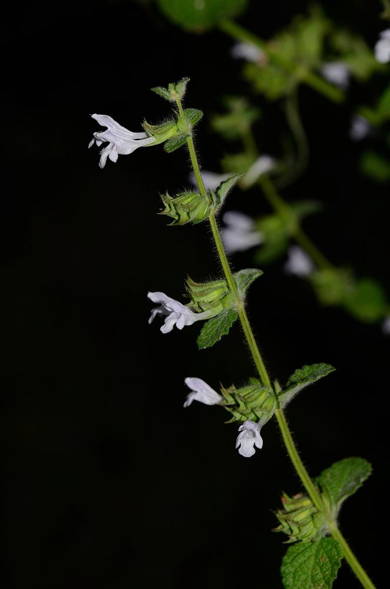

5 min de lecture · Herboristerie de Dinan
Gérer le stress avec les plantes adaptogènes
Le stress chronique épuise nos réserves physiques et nerveuses. Les plantes dites « adaptogènes » sont étudiées pour leur capacité à aider l'organisme à mieux s'adapter aux situations de stress, sans effet sédatif ni excitant.
La rhodiola : l'énergie sans agitation
Traditionnellement utilisée dans les régions froides d'Europe et d'Asie, la rhodiola est réputée pour soutenir la résistance à la fatigue liée au stress, sans effet excitant comme la caféine.
L'ashwagandha : l'ancrage ayurvédique
Pilier de la médecine ayurvédique, l'ashwagandha est étudiée pour son effet apaisant sur l'axe du stress, favorisant un sommeil de meilleure qualité en parallèle.
La mélisse : la douceur du quotidien
Plus douce, la mélisse citronnée calme les tensions nerveuses légères et les troubles digestifs liés au stress - une plante facile à intégrer en tisane du quotidien.
À savoir : les adaptogènes se prennent en cure de plusieurs semaines pour révéler leurs effets, contrairement à une tisane calmante ponctuelle. Un conseil personnalisé permet d'adapter la plante et la posologie à votre situation.